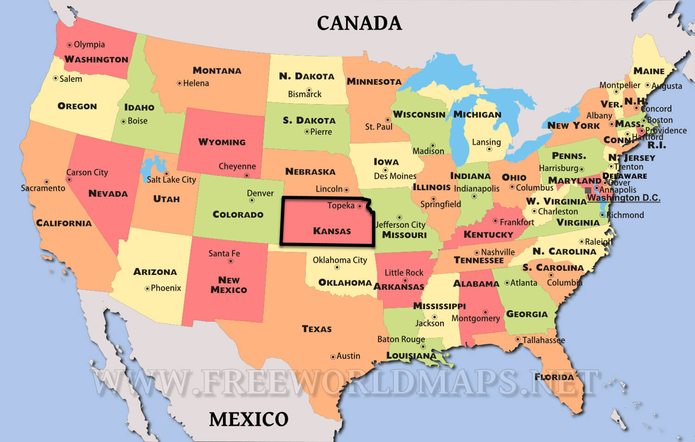
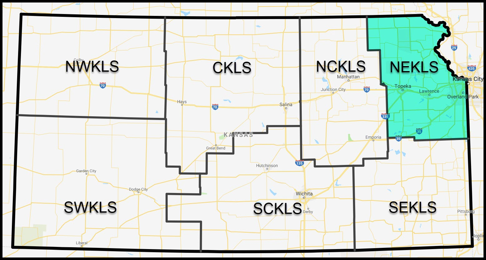
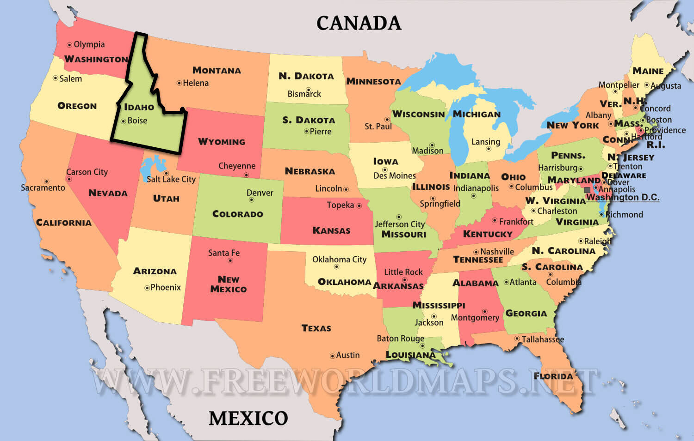

George Williams
koha-US Past President (2019) -- www.koha-us.org
USA

Kansas is in the middle.
Libraries in north east Kansas

117 NEKLS Libraries in the highlighted area.
Next Search Catalog
(used to be called NExpress)
Next Search Catalog is only one of the services NEKLS provides.
51 of our member libraries participate in our shared catalog.
Community Koha since 2011
(Liblime from 2008-2011)
My life BKE (Before Kansas Era)

- Latah County Library District
- Circulation Manager (2006-2016)
- University of Idaho
- TA and Lecturer (2002-2006)
- Boise Public Library
- Bookmobile Specialist (1997-2002)
- University of Idaho Library
- Student Employee (1996-1997)
- +Bus driver, Restaurant manager, Cook, Dishwasher